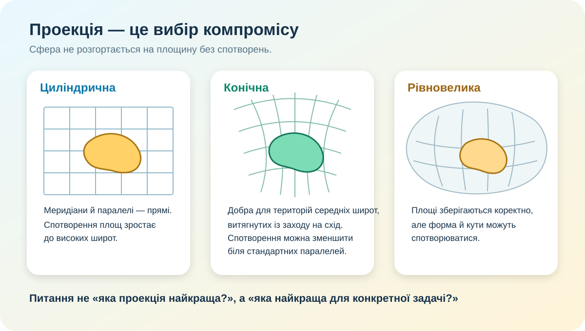

Карту Землі неможливо зробити «чесною» в усьому
Проблема: куля має криву поверхню, а карта — плоска. Якщо перенести поверхню Землі на площину, доведеться спотворити принаймні одну властивість: площу, форму, відстань або напрямок.
Важливо: у всіх завданнях територія України розглядається в міжнародно визнаних кордонах, включно з Автономною Республікою Крим і містом Севастополем.

Відкрийте практичну роботу
Розпізнай проекцію за градусною сіткою
1. Меридіани — паралельні прямі, паралелі — прямі; у напрямку до полюсів площі різко перебільшуються.
2. Паралелі — дуги, меридіани сходяться; проекція зручна для територій середніх широт, витягнутих із заходу на схід.
Виміряй, як Меркатор «розтягує» широти
Лінійний масштабний коефіцієнт ≈ 1.56×
Коефіцієнт перебільшення площі ≈ 2.42×
Для сферичної моделі Меркатора: k ≈ 1/cos φ; площа змінюється приблизно як k². Це навчальна модель, а не геодезичний розрахунок.
Перевір реальну онлайн-карту
Завдання: оцініть, чи варто за такою вебкартою точно порівнювати площу двох областей.
Що карта робить добре? Навігація, пошук населених пунктів, доріг і маршрутів.
Що треба перевіряти окремо? Проекцію, масштаб, дату даних, джерело та допустиму похибку.
Відкрити OSM окремоКартографічний консиліум: обери проекцію під задачу
Ви робите карту світу, де треба чесно порівняти площі країн.
Ви створюєте регіональну карту України для атласу з мінімальними деформаціями форми в середніх широтах.
Потрібна навігаційна вебкарта з масштабуванням і плитками.
Тепер збираємо закономірність
Добре зберігають локальні кути й форму малих об’єктів, але не площі. Меркатор — класичний приклад.
Зберігають співвідношення площ. Саме вони доречні для тематичних карт, де порівнюють території.
Особливо зручні для материків і держав середніх широт, витягнутих із заходу на схід. Спотворення регулюють положенням стандартних паралелей.
Навіть правильний вибір проекції не гарантує якості: важливі масштаб, генералізація, актуальність даних і мета карти.
CER: яку проекцію Ви рекомендуєте для карти України?
Напишіть короткий доказовий висновок. Не достатньо сказати «конічну»: треба пояснити для якої задачі і яке спотворення Ви намагаєтесь зменшити.
| Самоперевірка CER | Є? |
|---|---|
| Названо мету карти | |
| Є конкретний доказ про проекцію або спотворення | |
| Пояснено причинний зв’язок «властивість проекції → якість карти» |
Міні-аудит карти
Відкрийте будь-яку карту України в підручнику або онлайн. Запишіть: 1) її призначення; 2) масштаб; 3) якщо зазначено — проекцію; 4) які спотворення для цієї карти найбільш критичні; 5) чи відповідає обрана проекція меті.
Для перевірки та продовження дослідження
- OpenStreetMap — реальна інтерактивна вебкарта.
- NASA Worldview — супутникові шари Землі.
- Copernicus Browser — супутникові дані Sentinel.
- EPSG.io — довідник систем координат і проекцій.